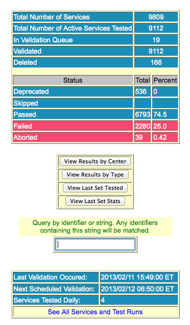
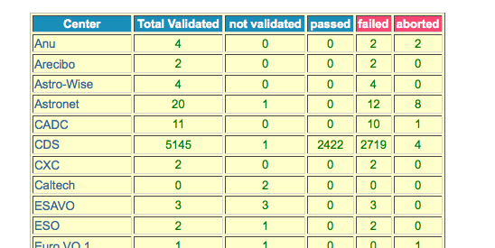
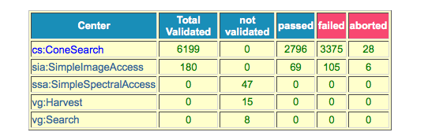
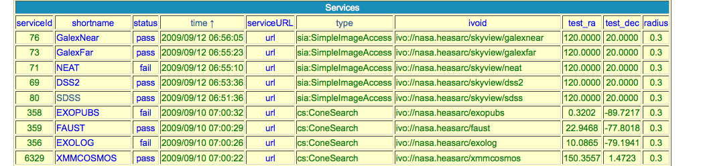

| Validation (Documentation) | ||||||
|
||||||
Hosted by:
HEASARC
|
|
|
Hosted by: HEASARC | ||||||||||||
The validation home page "http://heasarc.gsfc.nasa.gov/vo/validation/vresults.pl" provides some statistics on the
current validation results.

Total Number of Services - shows the total number of Services in the local database
Total Number of Active Services Tested - shows the number of services tested by our system. This number will
not necessarilly match the Total Number of Services since there are services that over time are either deleted
or deprecated in the STScI registry.
In Validation Queue- the total number of services that still need to be tested by our system.
Validated -shows the number of services validated
Deleted-the total number of services deleted in our system.
Deprecated-the total number of services deprecated in the registry and in our system. This means that the
service has been made "invisble" in the interactive registry search pages but still exists in the registry.
Skipped -this number shows how many services are being skipped in the statistics calculation. This
page can be queried using parameters to suppress or include different xsi types in the results.Please see the section
below entitled "Specifying Different Types of Output"
Passed - the number of services passing validation
Failed - the number of services that are not currently passing validation
Aborted - the number of services that could not be correctly validated. This could be due to a communication problem
with the web page for example.
View Results By Center (button) - get a list of validation results by center
View Resulst By Type (button) - get a list of validation results by Type
Query Box - use this to enter a string. Any strings entered are matched to ivo identifiers.
This table shows how many services have been validated at each center

This table shows how many services have been validated within a given service type

This table shows the validation results at a specific center. Here the center is the HEASARC. You can click on the status next to a service name
to get more information on the individual test. You can click on the service URL to get the URL being tested

The Validation page has several built in capabilities that users may find quite useful. A description of each follows:
If you wish to get the statistics for a particular xsitype, you must provide the names of the types you want to skip. Possible values are: cone,siap,tap,ssap,vgharvest, and vgsearch. If you wish to get the statistics for the SSA types only for example, the syntax would be:
http://heasarc.gsfc.nasa.gov/vo/validation/vresults.pl?turnoff=cone|siap|tap|vgharvest|vgsearch
Once on this page, you may view results by type or by center. In this example,the results will include only SSA types since the "turnoff" parameter's values persist when the new pages load.
If a user is on any of the pages summarizing the latest status of a service (i.e. a page with the 'pass', 'fail', and 'abort' links), the user may click on the status to get a list of the latest errors for the service. The subsequent page has a url that looks something like:
http://heasarc.gsfc.nasa.gov/vo/validation/vresults.pl?show=details&sid=547&runid=324501&switch=no
This page is an html representation of the error(s). However, the user may instead want an xml representation of this page. This can be obtained by adding 'votable=yes' to the query.
E.g. http://heasarc.gsfc.nasa.gov/vo/validation/vresults.pl?show=details&sid=547&runid=324501&switch=no&votable=yes
A complete list of all the current errors for a given center can be fetched directly with the syntax:
http://heasarc.gsfc.nasa.gov/vo/validation/getcenter.pl?show=XXX
where XXX is the name of the center. (E.g. AGES, Aladin, etc.). Of course for this the user must
know the name of the center as described on the page:
http://heasarc.gsfc.nasa.gov/vo/validation/vresults.pl?show=View+Results+by+Center
*Note: The script getcenter.pl is independent of the validation pages and can be queried directly as shown above
However,it might be easier for the user to access this script from the "View Results by Center" page via the 'view list' links.
Developed with the support of the National Science Foundation
This NVO Application is hosted by LocalSiteName |
Member |
Meet the Developers |
Hosted by the Astrophysics Science Divisionand the High Energy Astrophysics Science Archive Research Center (HEASARC)at NASA/GSFC
HEASARC Director: Dr. Nicholas E. White,
HEASARC Associate Director: Dr. Roger Brissenden,
Responsible NASA Official: Phil Newman